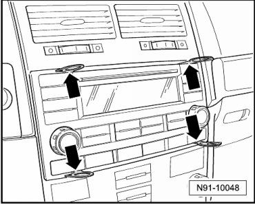
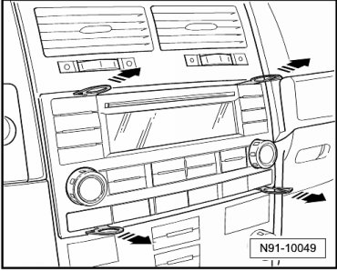
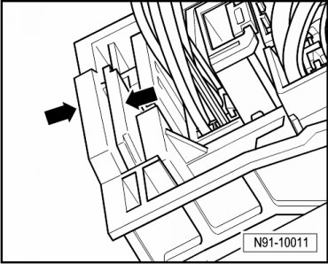
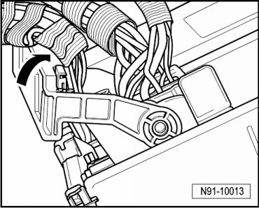
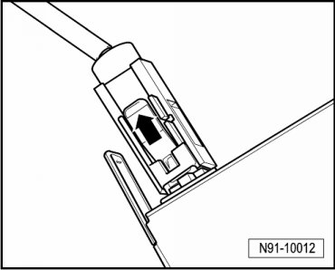

Delta Radio
Delta Radio
• Replacement part number for radio unit is located on a sticker on the radio unit housing.
• Ask the customer for the radio unit code number before removing. If radio unit is replaced, always activate anti-theft coding, --> Owner's Manual. The customer must be informed of the new code number.
Special tools, testers and auxiliary items required
• Radio removal tool (T10057)
Removing
Before starting repair work, perform the following:
- Switch off ignition, switch off all electrical consumers and remove ignition key.
- If necessary, remove CDs remaining in the unit. Refer to --> Owner's Manual.
Now, perform the following work procedure:
- Slide Radio Removal Tool (T10057) into slots designed for it on radio unit at left and right until it engages audibly - arrows -.

Top L - upper and lower left.
Top R - upper and lower right.
- Remove radio unit from installation opening using radio removal tool - arrows - until the connections on the rear side of the unit are reached.

- Press together the connector lock in direction of - arrows -.

- Then swing mounting bracket up in direction of - arrow - and disconnect harness connector.

- Release connector - arrow - from antenna connector.

- Press spring - arrow - and remove radio removal tool forward.

Installing
- Reconnect connectors on radio unit.
- Slide radio unit straight into installation opening until it engages in installation bracket.
• While sliding in the radio unit, do not press on the display or control buttons under any circumstances because the radio unit may be damaged by doing this.
- Check coding of radio unit and code radio unit again if necessary.
Radio unit coding, adapting components, radio. Refer to --> [ Radio Components, Adapting ] Programming and Relearning.